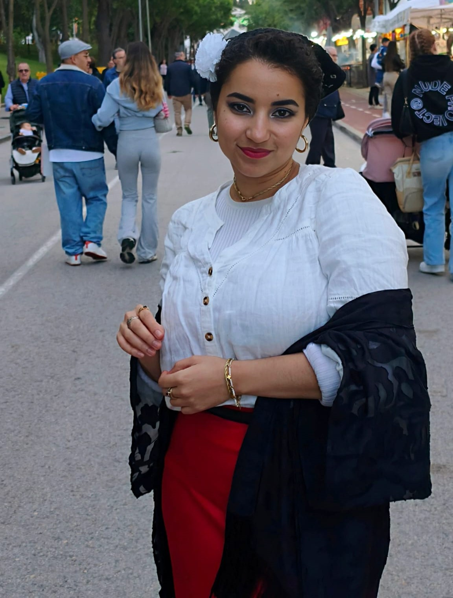
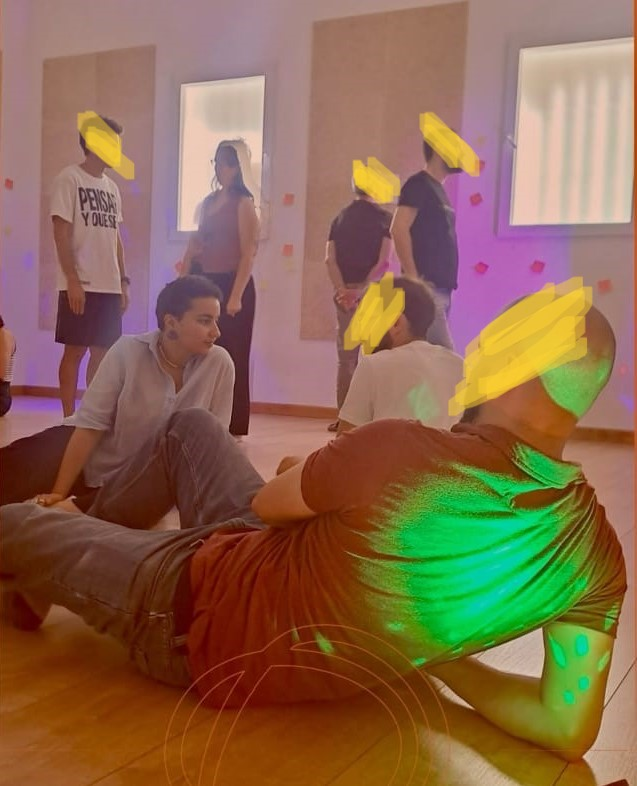
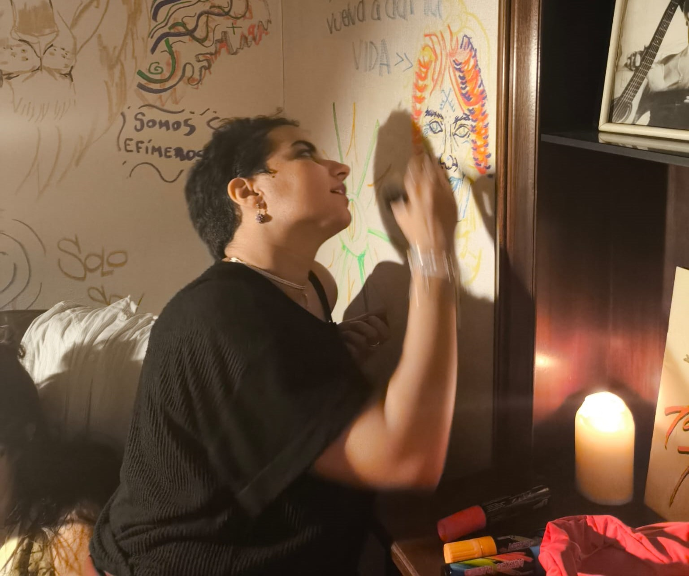
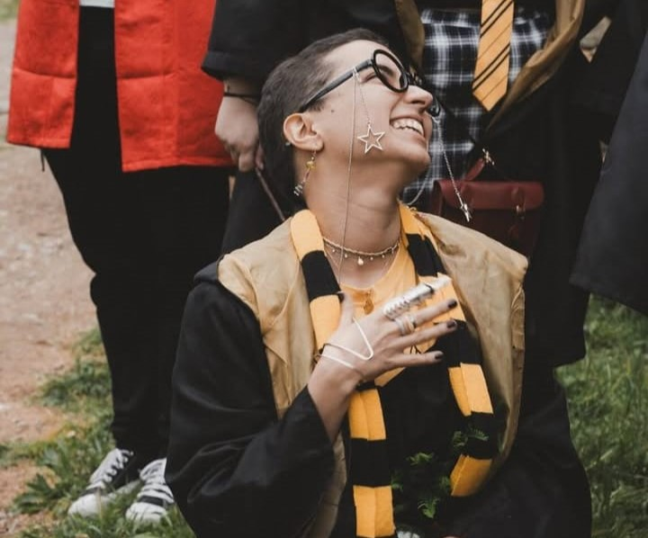

Community
CM 01
Sharing knowledge through accessibility, neuroscience and emotional wellbeing.
I’m Zainab — a UX/UI and Product Designer based in Madrid, originally from Tangier. I design digital experiences by connecting user behaviour, product needs and technical constraints.
I’ve worked with complex education platforms and B2B SaaS, often bringing clarity to products with many services, stakeholders and interconnected workflows. I’m particularly interested in research, accessibility, information architecture and design systems — and in making evidence useful to the people building the product.
Outside product teams, I facilitate workshops and explore how art, psychology and collective experiences shape the way we learn. I’m also studying research methodology, because I want to keep improving how I ask questions, gather evidence and interpret what people do.
An adopted chulapa living in Madrid 🌸

Four sides of my creative practice
Sharing knowledge through accessibility, neuroscience and emotional wellbeing.

Workshops on emotional regulation, fascia work and Theatre of the Oppressed with mixed and neurodivergent groups.

Collaborative projects connecting painting, writing, theatre and performance.

Interested in LARP, D&D, board games, video games and the stories people build together.
Research, design and cross-functional work
Oxford University Press
Led design and UX research across digital educational products, from information architecture and accessibility evaluations to interfaces and design system foundations. Worked with product, legal, editorial and engineering on decisions across a complex ecosystem.
See the work ↗Plytix
Joined a B2B SaaS product as its first dedicated UX hire. Built practical UX processes, investigated usability problems and connected product decisions with developer constraints.
See the work ↗Independent projects
Worked across digital experiences, visual identities, editorial and communication projects for educational institutions, NGOs and independent clients, including IPSIK and Sheedo.
I combine qualitative research, behavioural evidence and interaction design. I like working where UX overlaps with content, accessibility, development and business constraints.
Figma, FigJam, Hotjar, Maze, WCAG evaluations, Axe, screen readers, prototyping, IA, usability testing and developer handoff.
Research methodology, painting, poetry, theatre, violin and movement practices all inform how I think about people, attention and learning. I work across four languages.